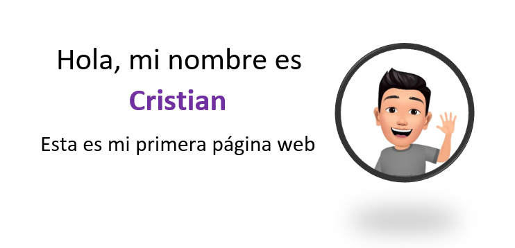

Soy estudiante de la carrera de Administración de Empresas en la Universidad Siglo 21 y
Tecnico en Administración y Dirección de Empresas. Mis fortalezas son el trabajo en equipo, capacidad de resolución y análisis de problemas.
Soy amante del aprendizaje y me encuentro explorando el mundo de la programación, ya que desde joven me a intrigado el conocer como se crean las paginas y app web.
Datos Personales
Nombre completo:
Cristian Ariel Patrone
Fecha de Nacimiento:
21/09/1995
Direccion:
C. Guarumba 530, Concordia, Entre Ríos
Teléfono:
3454 052208
Email:
cristian.patrone@hotmail.com
Experiencía
Auxiliar Contable
Dilfer S. A. - Financiera | Enero 2021 - Julio 2022
Conciliaciones de cuentas contables, bancarias e
impositivas.
Confección de reportes, informes y
presentaciones del estado actual de las cuentas
asignadas
Registro de comprobantes, gastos bancarios y de
tarjetas de crédito.
Comunicación directa con todas las áreas de la
empresa y con los proveedores
Mi mayor desempeño se encuentra en el análisis
de cuentas, conciliación y manejo de SAP.
Gestor de Cobros
Dilfer S. A. - Financiera| Oct 2017 - Dic 2020
Seguimiento de deudas vencidas.
Análisis de cuentas corrientes de clientes asignados
Gestión de análisis de riesgo crediticio y aplicación de planes de pago.
Desarrollo de habilidades de negociación, orientación y asesoramiento a clientes.
Educación
Universidad Siglo 21
Licenciatura en Administración
2022 - Cursando
17 materias aprobadas de 46
Promedio actual: 9
Instituto Técnico Superior Concordia
Tecnicatura en Administración de Empresas
2019 - 2021
Graduado con promedio 9.25.
Delegado de promoción.
Portfolio
Porfolio web

Fecha de realización: En proceso
Descripcion: Este porfolio es diseñado para crear al proyecto final del curso #YoProgramo